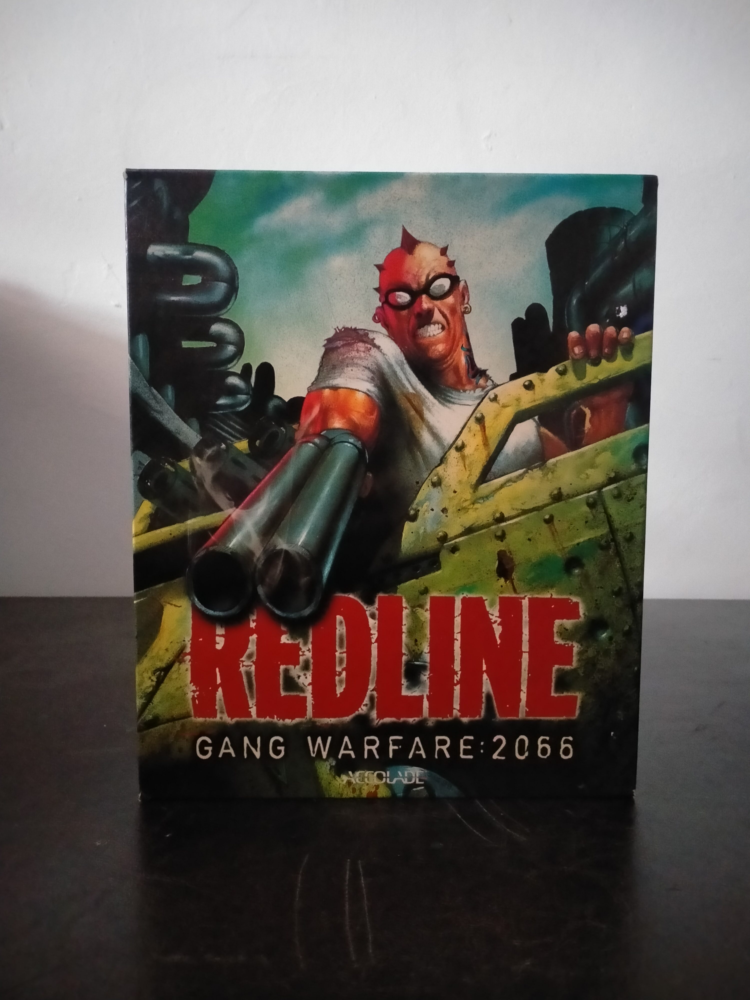

Ficha #000164
Redline: Gang Warfare 2066
Redline: Gang Warfare: 2066 es la denominación europea de Redline, videojuego para Windows lanzado en 1999 y desarrollado por Beyond Games. Su propuesta híbrida combina shooter en primera persona y combate vehicular, permitiendo alternar durante las misiones entre enfrentamientos a pie y conducción de vehículos armados. La acción transcurre en un futuro postapocalíptico en el que las clases privilegiadas viven protegidas en ciudades fortificadas mientras diferentes bandas luchan por sobrevivir en el exterior. La propia edición destaca escenarios de gran extensión, progresión dentro de una banda, más de veinte vehículos especializados y multijugador para hasta doce participantes mediante red local o Internet. Accolade publicó el título y Electronic Arts asumió su distribución europea, circunstancia reflejada en esta edición física española en caja grande. El juego resulta especialmente representativo de los experimentos de finales de los noventa por fusionar el shooter 3D con el combate motorizado dentro de una misma estructura jugable.
- Formato
- Big Box
- Plataforma
- Win95 Win98
- Género
- Shooter en primera persona Combate vehicular Acción Ciencia ficción postapocalíptica
- Serie
- Todos Big Box
- Desarrollador
- Beyond Games
- Distribuidor
- Accolade, Electronic Arts
- EAN
- —
Contenido de la edición
- Caja Big Box
- CD-ROM en caja jewel case
- Manual de instrucciones
- Tarjeta de actualización de datos de Electronic Arts
Preservación
- Protección
- No determinado
- Formato recomendado
- BIN/CUE
- Jugable en virtualización
- Sí
Edición distribuida en CD-ROM. Se recomienda realizar una imagen BIN/CUE del disco original y conservar digitalizados el manual y la documentación impresa. La ejecución virtual debería ser viable mediante un entorno Windows 95/98 correctamente configurado, aunque conviene verificar en la edición concreta cualquier comprobación de disco y los requisitos de aceleración gráfica 3D.